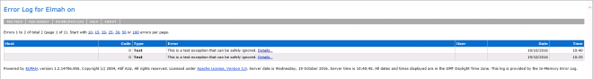
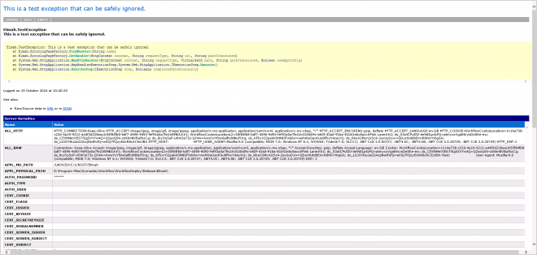
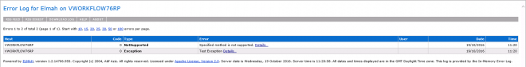
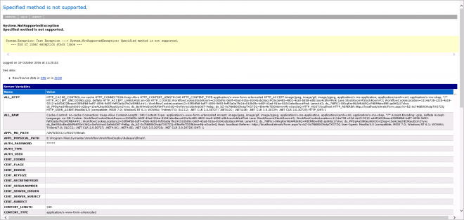
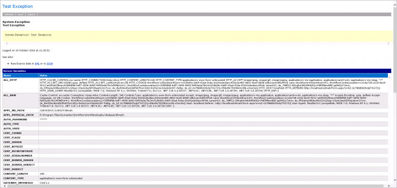

In this article I will explain how to add custom logging to a Workflow Project using the Elmah project.
We all use the Create Log Component to log Exceptions or useful information we need from our Projects, either whilst debugging or otherwise.
Instead why not leverage a great resouce
ELMAH (Error Logging Modules and Handlers) is an application-wide error logging facility that is completely pluggable. It can be dynamically added to a running ASP.NET web application, or even all ASP.NET web applications on a machine, without any need for re-compilation or re-deployment.
Once ELMAH has been dropped into a running web application and configured appropriately, you get the following facilities without changing a single line of your code:
- Logging of nearly all unhandled exceptions.
- A web page to remotely view the entire log of recoded exceptions.
- A web page to remotely view the full details of any one logged exception, including colored stack traces.
- In many cases, you can review the original yellow screen of death that ASP.NET generated for a given exception, even with customErrorsmode turned off.
- An e-mail notification of each error at the time it occurs.
- An RSS feed of the last 15 errors from the log.
Create a new Web Forms project.
Add the Library
✓ Copy Local | ✓ Publish
We need it in the bin folder.
Open the web.config
Add the following sections:
As the first section:
This will be used by the below sections.
<configSections>
<sectionGroup name="elmah">
<section name="security" requirePermission="false" type="Elmah.SecuritySectionHandler, Elmah" />
<section name="errorLog" requirePermission="false" type="Elmah.ErrorLogSectionHandler, Elmah" />
<section name="errorMail" requirePermission="false" type="Elmah.ErrorMailSectionHandler, Elmah" />
<section name="errorFilter" requirePermission="false" type="Elmah.ErrorFilterSectionHandler, Elmah" />
</sectionGroup>
<section name="infragistics.web" type="System.Configuration.SingleTagSectionHandler, System, Version=4.0.0.0, Culture=neutral, PublicKeyToken=b77a5c561934e089" />
</configSections>
Next is the system.web options.
<configuration>
...
<system.web>
...
<httpHandlers>
...
<add verb="POST,GET,HEAD" path="elmah.axd" type="Elmah.ErrorLogPageFactory, Elmah" />
</httpHandlers>
<httpModules>
...
<add name="ErrorLog" type="Elmah.ErrorLogModule, Elmah"/>
</httpModules>
...
</system.web>
...
</configuration>
Then the webServer attributes.
<configuration>
...
<system.webServer>
<validation validateIntegratedModeConfiguration="false"/>
<modules>
...
<add name="Elmah.ErrorLog" type="Elmah.ErrorLogModule, Elmah" preCondition="managedHandler" />
</modules>
<handlers>
...
<add name="Elmah" path="elmah.axd" verb="POST,GET,HEAD" type="Elmah.ErrorLogPageFactory, Elmah" preCondition="integratedMode" />
</handlers>
</system.webServer>
</configuration>
We need to set the Security for Elmah.
0 - prohibits remote users from viewing the error log
... ... ...... 1 - allows remote access - add further security at an IIS level
By Default Elmah will log to the file Elmah.axd.
To test this, publish your Workflow Project then go to
http://SERVER/PROJECTNAME/elmah.axd/test
Now go to the elmah.axd file to see the information
http://SERVER/PROJECTNAME/elmah.axd

You can then click on the Details to see it further

Now if we want to log information to this we can use a Scripting Component.
[See an upcoming Download of a Workflow Component to do this without a Scripting Component.]
This library isn't added by default so search for it then expand Unloaded Libraries and add it in or find the "LogicBase.Components.Scripting.dll" and add that.
Add an Input - Message.
Result variable - no return
Source Code
Add a using below System.
Elmah
There are a number of options here.

You could create an Exception and pass that:
var customEx = new Exception(Message, new NotSupportedException());
ErrorSignal.FromCurrentContext().Raise(customEx);

Or just use the Message as the Exception:
Elmah.ErrorSignal.FromCurrentContext().Raise(new Exception(Message));

Wrap this in a Try Catch too
try {
...
} catch (Exception ex) {
ErrorSignal.FromCurrentContext().Raise(ex);
}
This is only stored for the life cycle of the application so you might want to make it more permanent by using a Database.
See an upcoming Article for this [Workflow - ELMAH - Custom Logging - Database].
Articles
Logging Error Details with ELMAH (C#)
Grab the code: https://code.google.com/p/elmah/, there are 32-Bit and 64-Bit versions of Elmah.dll.